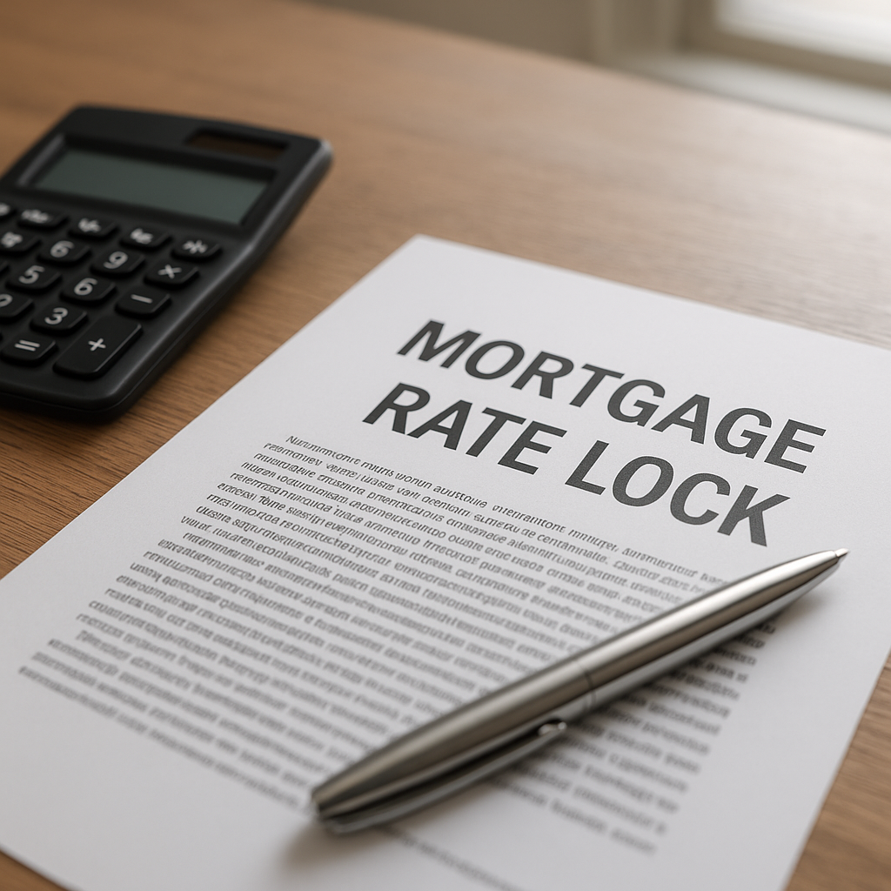

I'm Bond Peter Njoku (NMLS #2670329), and on September 16, 2026, the Federal Reserve raised the federal funds rate by 25 basis points to a target range of 3.75%–4% — its first hike since 2023, made in response to inflation running at 3.4%. Within a single week, Freddie Mac's Primary Mortgage Market Survey showed the 30-year fixed average jump from 6.76% to 6.95%, and by the week of September 21–25 the DFW quotes I'm seeing have pushed into the 7.00%–7.25% range depending on credit profile and loan type. If you're shopping for a home in Garland, Rockwall, or anywhere else in my DFW service area right now, that move changes the lock-vs-float math you should be running.
What did the Fed actually raise, and why did my mortgage rate move too?
The Fed doesn't set mortgage rates directly — it sets the federal funds rate, an overnight rate banks charge each other. Mortgage rates track the 10-year Treasury yield instead, which moves on expectations about inflation and future Fed policy. The September 16 hike itself was largely priced in before the announcement, but Fed Chair Kevin Warsh's press conference and the committee's updated projections — the "dot plot" — were more hawkish than markets expected, which is what pushed Treasury yields, and mortgage rates with them, higher that same week.
How much did DFW mortgage rates actually move?
| Date | 30-year fixed (national average) | Monthly P&I on $350,000 loan |
|---|---|---|
| Sept 9, 2026 (before the hike) | 6.76% | $2,272.42 |
| Sept 17, 2026 (Freddie Mac survey, day after hike) | 6.95% | $2,316.82 |
| Week of Sept 21–25, 2026 forecast | 7.01% | $2,330.91 |
| Higher-credit-tier DFW quotes seen this week | 7.25%–7.37% | $2,387.62–$2,416.17 |
That's a real difference: a buyer who locked at 6.76% before September 9 versus one locking at 7.01% today is paying roughly $58 more per month on the same $350,000 loan — about $21,000 more over a 30-year term. Rates move in both directions over time, but the direction right now, in the days immediately following this hike, has been up.
Why the Fed's dot plot matters more than the hike itself
A single 25 basis point hike wasn't the surprising part — most economists expected it. What matters for anyone deciding whether to lock or float is that 16 of the 18 FOMC officials penciled in at least one more rate hike before the end of 2026 in their updated projections. That's a meaningfully hawkish signal. It doesn't guarantee mortgage rates keep climbing in lockstep, but it removes the "rates will probably come down if I just wait" assumption that made floating a reasonable bet earlier this year.
Locked vs. floating: what you're actually choosing
| Lock now | Float (wait to lock) | |
|---|---|---|
| Your rate | Fixed the moment you lock, unaffected by future moves | Unknown until you lock — could be better or worse |
| Upside if rates fall | None, unless you add a float-down option | Full upside if rates drop before you lock |
| Downside if rates rise | None — you're protected | Full exposure — this is the scenario playing out this month |
| Best fit right now | Buyers who can afford today's payment and want certainty | Buyers comfortable taking on real rate risk for a shot at a dip |
What is a float-down option, and should I ask for one?
A float-down lets you lock your rate today but still capture a lower rate if the market improves meaningfully before your closing, usually for a small fee or a slightly higher starting rate than a plain lock. Given the Fed's hawkish dot plot, I'm telling most of my DFW clients locking this month to at least ask about float-down protection — it hedges the one real risk a plain lock leaves on the table, which is missing out if this month's spike proves temporary.
Named scenario: a Mesquite buyer who locked the week of the hike
I'm working with a family under contract on a $350,000 home in Mesquite with a closing scheduled for late October. They were originally planning to shop rates for another two to three weeks before locking. When the Fed's September 16 decision and dot plot came out, we ran the numbers together: floating another 30 days, if rates simply held at the post-hike level, would cost them nothing extra — but if rates moved even another quarter point, which is exactly what the dot plot suggested was likely, their payment would rise by roughly $60 a month, or about $21,600 over the life of the loan. They locked that same week with a float-down option attached, so they're protected from further increases but not fully locked out if the market reverses.
How do I get started locking my rate in DFW?
Start with a real pre-approval so your lock is based on numbers underwriting has actually reviewed, not a rough estimate. From there, I'll size your lock period to your realistic closing date — 30, 45, or 60 days depending on your contract — and tell you plainly whether a float-down makes sense for your specific loan program and timeline.
Frequently Asked Questions
Did the Fed's September 2026 rate hike directly raise my mortgage rate?
I'm Bond Peter Njoku (NMLS #2670329) and the honest answer is indirectly, but fast. The Fed doesn't set mortgage rates — it sets the federal funds rate, which is an overnight bank-to-bank lending rate. But mortgage rates track the 10-year Treasury yield, and that yield moved sharply the same week as the Fed's September 16, 2026 hike on the hawkish tone of the announcement. Freddie Mac's own survey showed the 30-year average jump from 6.76% to 6.95% in that single week. Call or text me at 469-545-7180 and I'll show you where DFW lenders are actually pricing loans today.
What is a float-down option and do I need one right now?
I'm Bond Peter Njoku (NMLS #2670329). A float-down lets you lock a rate today but still capture a lower rate if rates drop meaningfully before you close, usually for a small fee or a slightly higher starting rate. With the Fed's dot plot showing most officials expecting at least one more hike before year-end, I'm recommending float-down protection for anyone locking a DFW purchase or refinance right now, because it hedges the one scenario a plain lock doesn't cover. Call or text me at 469-545-7180 and I'll tell you whether your specific loan program offers it.
How long can I lock my rate for a Texas purchase?
I'm Bond Peter Njoku (NMLS #2670329) and most DFW purchase locks run 30, 45, or 60 days depending on how far out your closing date sits, with longer locks usually costing a bit more in rate or points. If you're under contract in Garland, Rockwall, or anywhere else in my service area and your closing could slip past your lock expiration, tell me now rather than the week it's set to expire — extending a lock after the fact almost always costs more than building in enough runway up front. Call or text me at 469-545-7180 with your contract dates and I'll size the lock correctly the first time.
Should I wait to see if mortgage rates drop before locking?
I'm Bond Peter Njoku (NMLS #2670329). Waiting only pays off if rates actually fall, and right now 16 of 18 Fed officials are projecting another hike before the end of 2026, not a cut. I've watched buyers wait for a dip that never came and end up locking at a worse rate two months later than what was available the day they first asked. If you have a rate you can comfortably afford today, locking it removes that risk entirely — you can still add a float-down if you want downside protection. Call or text me at 469-545-7180 and I'll walk through your specific numbers before you decide.
Don't let this week's rate move catch you off guard.
I'm Bond Peter Njoku (NMLS #2670329). If you're shopping or under contract anywhere in DFW, let's look at today's actual pricing and decide whether locking now makes sense for you. Call or text me at 469-545-7180, message me on WhatsApp, or start your pre-approval online.